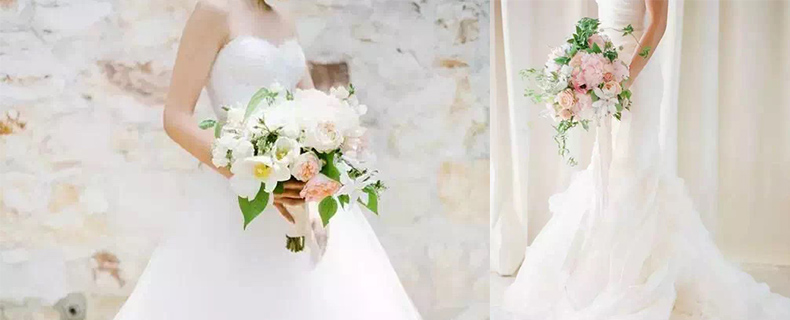
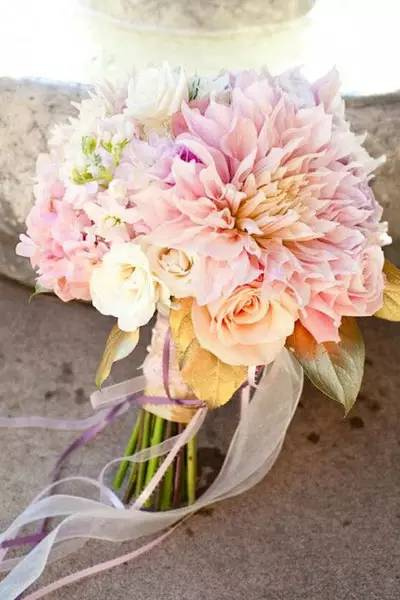

How to hold a bridal bouquet?
1.What kinds of bridal bouquets you should choice
Bride and bridesmaid should have the same type of the bridal bouquet.In order to dintinguish bride and bridesmaid,the color of the bridal bouquet should be different.The bride's flowers should be bigger and more dazzling.

2.The current posture when you hold a bridal bouquet
You should fold your hands and hold the bridal bouquet before your chest.Be serious,most importantly,don't take the bridal bouquet in one hand.
3.Don't forget your bridal bouquet's mission.
Remember to throw your bridl bouquet.And the one who received your flowers means the next one to get married married.